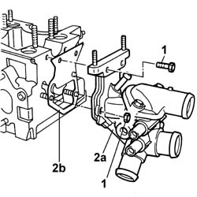

1088C42 THERMOSTAT - R + R WITH CYLINDER HEAD REMOVED
- Path
- Procedures > 10 ENGINE UNIT > 1088 ENGINE COOLING > 1088C WATER PUMP AND THERMOSTAT > 1088C42 THERMOSTAT - R + R WITH CYLINDER HEAD REMOVED
- Kind
- repair procedure (removal / refitting; the operation number is the code)
- Applies to
- engines: 2.8 JTD 8V; all production periods
- Interactive page
- https://sloeber94.github.io/elrnDB-fDct/en/#/244000951
Applies to: engines: 2.8 JTD 8V; all production periods
 Removing
Removing
 Refitting
Refitting1. Undo the nuts and the bolts fixing the thermostat.
2. Remove the thermostat (2a) and seal (2b).

Applies to: engines: 2.8 JTD 8V; all production periods
Refitting
Removing- Fit a new seal.
- Position the thermostat on the cylinder head and tighten the fixing nuts and bolts, checking the torque.
 | Value - daNm | Fastening | Component | Ø |
|---|---|---|---|---|
. | 1,8 | Bolt | THERMOSTAT | M8 |